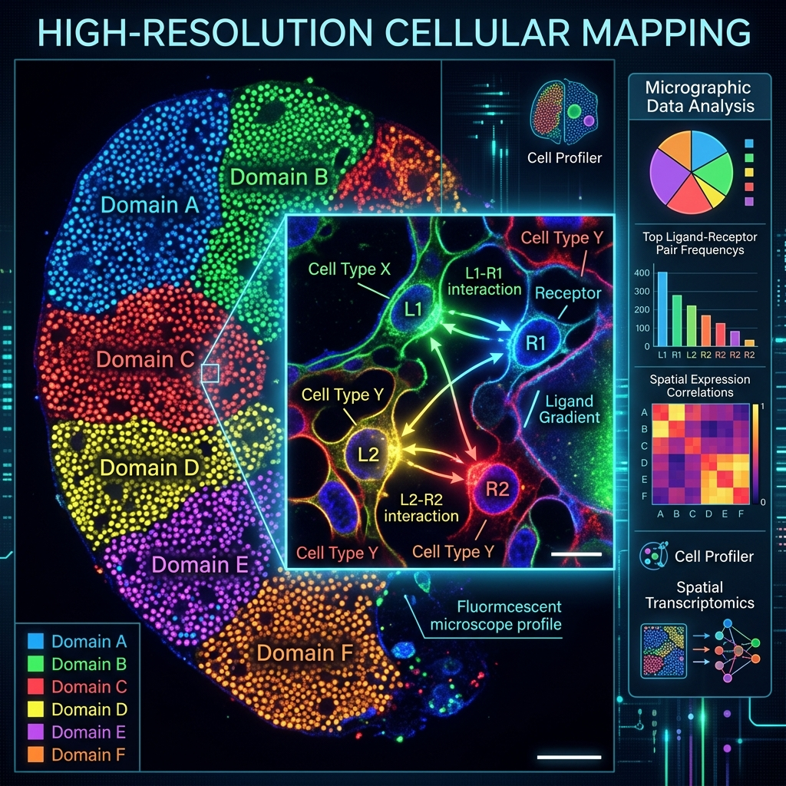
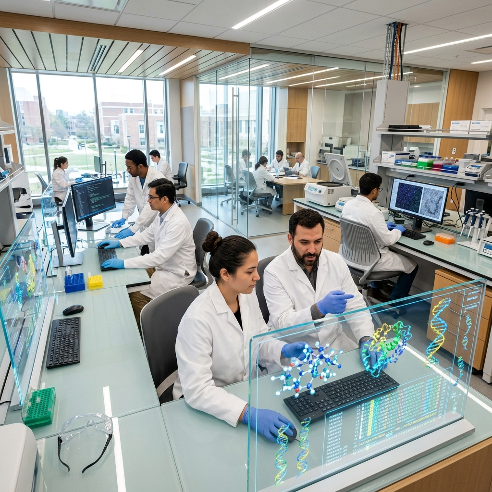

Computational precision for molecular discovery.
RASA Life Science Informatics delivers AI-powered NGS data analysis services IndiaHigh-throughput DNA and RNA sequencing workflows. and in-silico drug discovery, transforming raw sequence data into therapeutic insights for pharmaceutical, biotechnology, and clinical R&D.
Specialized R&D solutions, built for biotech & pharma.

Transcriptomics (RNA-seq)
End-to-end bulk and single-cell RNA-seq (scRNA-seq) pipelines for differential expression, clustering, trajectory analysis, and biomarker discovery.
View Pipeline
WGS & Exome (WES)
High-fidelity variant calling (SNVs, Indels, CNVs, structural variants) annotated via ClinVar and gnomAD databases for cancer and rare diseases.
View Pipeline
Spatial Transcriptomics
Map gene expression profiles within intact tissue slices using 10x Genomics Visium, Slide-seq, and MERFISH data analytics pipelines.
View Pipeline
Target ID & Structure
Integrative mining of transcriptomic & clinical data paired with high-accuracy 3D structural prediction utilizing AlphaFold2 models.
Explore Target ID
Virtual Screening
High-throughput structure-based virtual screening and shape-based pharmacophore docking of commercial compound databases.
Explore ScreeningLead Optimization
Refine hit binding affinities with GROMACS molecular dynamics, ML QSAR modeling, SwissADME profiling, and toxicity filters.
Explore OptimizationFrom raw FASTQ sequencing reads to validated insights.
Our containerized, reproducible bioinformatics workflows ensure that raw sequencing datasets are quality controlled, mapped, and mathematically modeled with full scientific rigor.
Expert Bioinformatics Consultants
Consult directly with our PhD-level computational biologists to customize your R&D pipelines.
Dr. Rajesh Dharmarajan
Chief Scientific OfficerOver 18 years in computational genomics, transcriptomics pipelines, and custom clinical panel design.
Schedule ConsultationDr. Sonali Patil
VP of Lead OptimizationSpecializes in molecular dynamics simulations, quantum mechanics docking, and QSAR toxicological filters.
Schedule ConsultationDr. Amit Shrivastava
Head of NGS WorkflowsExpert in single-cell transcriptomics, spatial profiling, PacBio/Oxford Nanopore long-read alignment.
Schedule ConsultationService Tiers Comparison
Select the optimal engagement tier for your computational biology projects.
Interfaced with industry-standard sequencing & cloud systems
Looking for a leading bioinformatics company in India?
RASA provides secure, cloud-scale computational genomics and drug design solutions. Talk to our bioinformatics experts in Pune today to discuss your data analysis requirements.